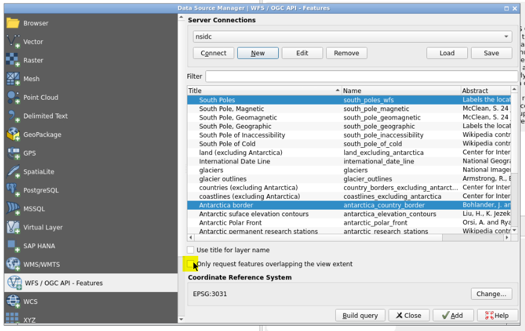
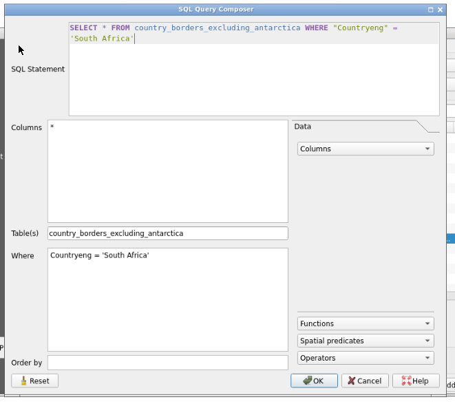
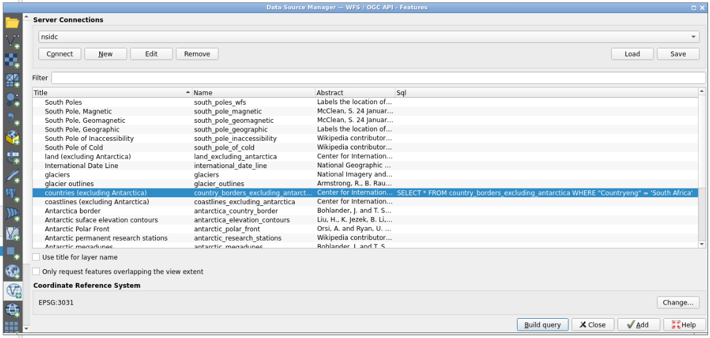

QGIS Web Feature Services
OverviewQuestions:
Objectives:
How to use WFS webservice to access and import GIS data through Galaxy
Requirements:
Deal with QGIS execution management
Access, filter, and import GIS data using WFS webservice
Time estimation: 0 hours 30 minutesSupporting Materials:Published: Oct 11, 2023Last modification: Nov 3, 2023License: Tutorial Content is licensed under Creative Commons Attribution 4.0 International License. The GTN Framework is licensed under MITpurl PURL: https://gxy.io/GTN:T00367version Revision: 19
Based on this QGIS official tutorial, you will learn here how to access, filter and import GIS data through WFS web service using QGIS Galaxy interactive tool:
In the Geographical Information System landscape, there is existing standards to help users deal with remote data. The most common web services are Web Map Services (WMS) and Web Feature Services (WFS). If WMS allows users only to access and display maps stored remotely, WFS is giving access to the features of data so you can modify it and create your own data and maps.
AgendaIn this tutorial, we will cover:
Managing QGIS Galaxy interactive tool
QGIS is now integrated in Galaxy as an interactive tool. This kind of tool works differently than classical tools as it allows the user to interact with a dedicated graphical interface.
To use QGIS, you need to use the dedicated form, you can specify input datasets from your history you want to use in QGIS, or not ;), then press the execute button to launch a QGIS instance. When the graphical user interface of QGIS is ready to be used, a URL will be displayed at the top of the Galaxy center panel. If you don’t see it, you can see and access it through the “Active InteractiveTools” space of the “User” menu or you can click on galaxy-eye on the tool in the history.
Once you finish your work on QGIS, if you want to reuse data and/or the entire project, you need to save files in the “output” folder (which you can find in the “working” directory). Then, quit QGIS properly through the “Project” Menu tab top left and click on “Exit QGIS”.
Hands-on: Deploy your own QGIS instance
- Create a new history for this tutorial
- Deploy a QGIS instance
- Access QGIS
- Save your project in /working/output folder
Web Feature Services
Loading WFS layer
Hands-on: Loading WFS layer
- Go to the top left of QGIS and click on “Layer”
- Click on the 1st option “Data Source Manager”
- Select “WFS / OGC API - Features” on the left part of the pop-up panel
- Click the “New” button
In the dialog that appears, enter the Name as
nsidcand the URL ashttp://nsidc.org/cgi-bin/atlas_south?version=1.1.0.You can expand the QGIS left panel (where there are 3 dots, vertically) to access the “clipboard” menu and paste the content you want to paste on a QGIS form. Then, click outside of this panel to collapse it, and you can click for example on the
urlfield to paste the URL from your clipboard- Click OK, then you can create the connection with the “connect” button to see a list of available layers
- Find and select the
antarctica_country_border(Antartica border) layer- Find and select, holding the “CTRL” button, the
south_poles_wfs(South border) layer- Unselect “only request features overlapping the view extent” option then click “add” 
- You now have Antarctica border displayed with a symbol showing the south pole
- You can double click each layer at the bottom left to modify symbology, notably color for “south_poles_wfs” modifying the symbol by selecting for example “effect drop shadow” click on “Save Symbol…” and add a label
Geographic South Pole
- And to “antarctica_country_border”.


Querying a WFS layer
Even if you can select, download and display entire WFS layers, it is often more efficient to interrogate a layer before loading it to QGIS. This is a major interest of the use of such web services, as you can save internet bandwidth by selecting only parts of layer you want in your own QGIS instance.
Hands-on: Querying a WFS layer
- In the WFS server already created in the first step of this tutorial, there is a layer called
countries (excluding Antarctica). If we want to know where is South Africa related to thesouth_poles_wfs, there are several manners to operate. One can load the entire layer ofcountries (excluding Antarctica)and then use it locally, or we can save bandwidth and only load locally the needed information concerning South Africa. We will here use the second manner, querying the WFS layer to obtain only information we will use in our QGIS instance.- Go to the top left of QGIS and click on “Layer”
- Click on the 1st option “Data Source Manager”
- Select “WFS / OGC API - Features” then the already connected
nsidcserver- Select the
countries (excluding Antarctica)layer and click “Build query” button- On the new dialog box, you can copy/paste this query:
SELECT * FROM country_borders_excluding_antarctica WHERE "Countryeng" = 'South Africa'using the clipboard functionality from the left QGIS panel to make a “bridge” between your local clipboard and the virtualized QGIS one. - Clicking OK, you can now see the SQL query on a dedicated column of the layers table. 
- Clicking the “Add” button, you now have the South Africa layer added and displayed on QGIS.


{kind=link}
{kind=link}
{kind=link}
{kind=link}
Question
- Are you seeing how QGIS shows the fact that a layer is resulting from a query made on a larger layer?
- There is a dedicated “filter” icon next to the name of the layer.
Conclusion
You just did a classical GIS operation, accessing remote data using WFS webservice through QGIS, retrieving features of interest you can share broadly through Galaxy!
Key points
From WFS webservice, you can now access GIS remote data, build a query to select a subpart of the data, and import it to Galaxy through QGIS Galaxy interactive tool.
Frequently Asked Questions
Have questions about this tutorial? Check out the FAQ page for the Ecology topic to see if your question is listed there. If not, please ask your question on the GTN Gitter Channel or the Galaxy Help ForumUseful literature
Further information, including links to documentation and original publications, regarding the tools, analysis techniques and the interpretation of results described in this tutorial can be found here.
Feedback
Did you use this material as an instructor? Feel free to give us feedback on how it went.
Did you use this material as a learner or student? Click the form below to leave feedback.

Citing this Tutorial
- Coline Royaux, Marie Josse, Yvan Le Bras, QGIS Web Feature Services (Galaxy Training Materials). https://training.galaxyproject.org/training-material/topics/ecology/tutorials/QGIS_Web_Feature_Services/tutorial.html Online; accessed TODAY
- Hiltemann, Saskia, Rasche, Helena et al., 2023 Galaxy Training: A Powerful Framework for Teaching! PLOS Computational Biology 10.1371/journal.pcbi.1010752
- Batut et al., 2018 Community-Driven Data Analysis Training for Biology Cell Systems 10.1016/j.cels.2018.05.012
Congratulations on successfully completing this tutorial!@misc{ecology-QGIS_Web_Feature_Services, author = "Coline Royaux and Marie Josse and Yvan Le Bras", title = "QGIS Web Feature Services (Galaxy Training Materials)", year = "", month = "", day = "" url = "\url{https://training.galaxyproject.org/training-material/topics/ecology/tutorials/QGIS_Web_Feature_Services/tutorial.html}", note = "[Online; accessed TODAY]" } @article{Hiltemann_2023, doi = {10.1371/journal.pcbi.1010752}, url = {https://doi.org/10.1371%2Fjournal.pcbi.1010752}, year = 2023, month = {jan}, publisher = {Public Library of Science ({PLoS})}, volume = {19}, number = {1}, pages = {e1010752}, author = {Saskia Hiltemann and Helena Rasche and Simon Gladman and Hans-Rudolf Hotz and Delphine Larivi{\`{e}}re and Daniel Blankenberg and Pratik D. Jagtap and Thomas Wollmann and Anthony Bretaudeau and Nadia Gou{\'{e}} and Timothy J. Griffin and Coline Royaux and Yvan Le Bras and Subina Mehta and Anna Syme and Frederik Coppens and Bert Droesbeke and Nicola Soranzo and Wendi Bacon and Fotis Psomopoulos and Crist{\'{o}}bal Gallardo-Alba and John Davis and Melanie Christine Föll and Matthias Fahrner and Maria A. Doyle and Beatriz Serrano-Solano and Anne Claire Fouilloux and Peter van Heusden and Wolfgang Maier and Dave Clements and Florian Heyl and Björn Grüning and B{\'{e}}r{\'{e}}nice Batut and}, editor = {Francis Ouellette}, title = {Galaxy Training: A powerful framework for teaching!}, journal = {PLoS Comput Biol} Computational Biology} }
Galaxy Administrators: Install the missing toolsYou can use Ephemeris's
shed-tools installcommand to install the tools used in this tutorial.shed-tools install [-g GALAXY] [-a API_KEY] -t <(curl https://training.galaxyproject.org/training-material/api/topics/ecology/tutorials/QGIS_Web_Feature_Services/tutorial.json | jq .admin_install_yaml -r)Alternatively you can copy and paste the following YAML
--- install_tool_dependencies: true install_repository_dependencies: true install_resolver_dependencies: true tools: []